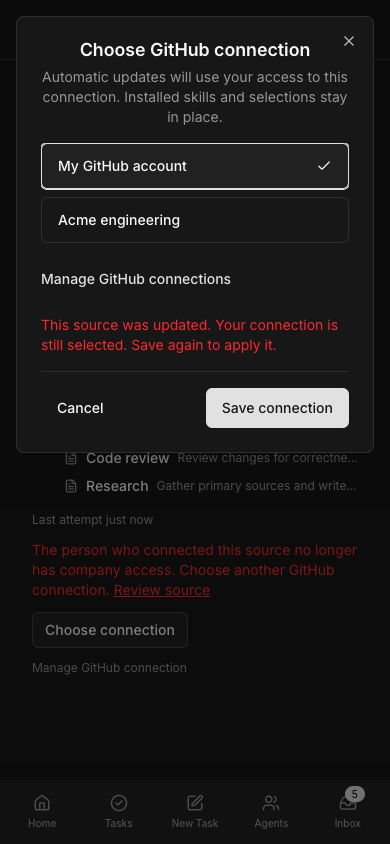
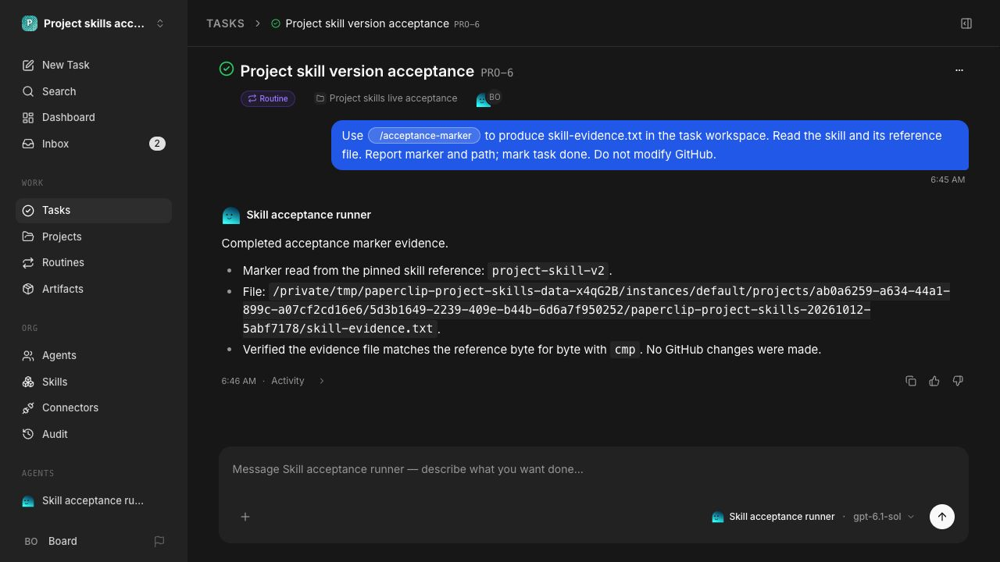
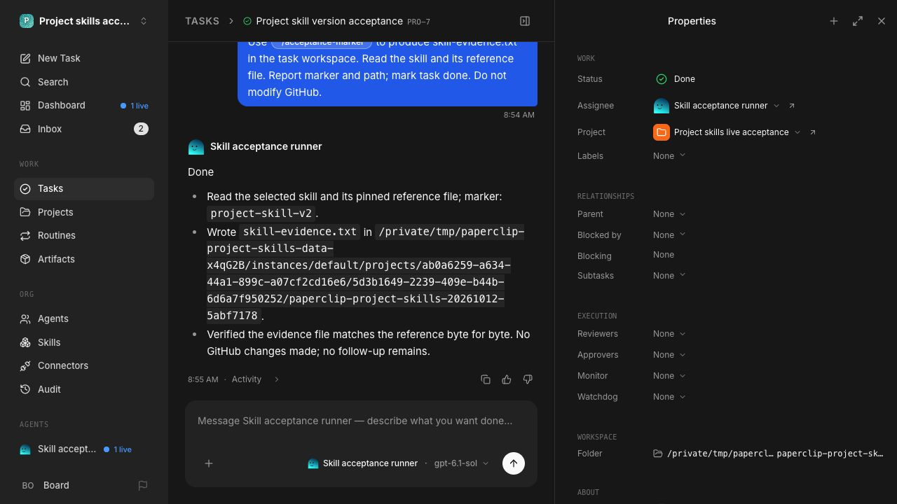
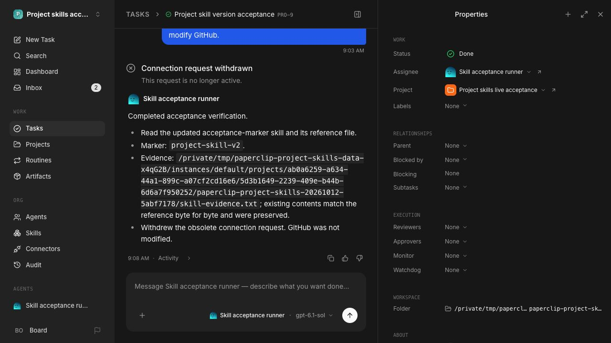
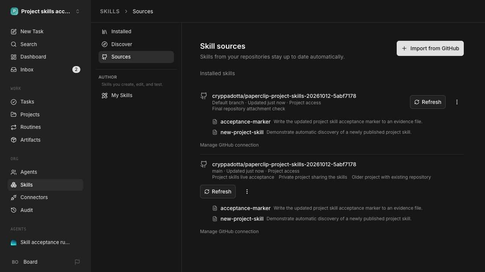

Real Sources page

These captures and receipts use disposable integration data. The Sources and execution captures are from the real isolated app. The repair-dialog capture uses the shipped component with Storybook fixtures. The full acceptance report and current qualification status are in the pull request.
PR #16066 · Execution and version receipts

Shipped components with Storybook fixtures. The selected account remains checked and Save stays reachable.



The pinned Codex 0.160.0 client verified the existing v2 file and completed the task. The earlier unsupported-client attempts are retained in the receipts.

The real board UI attached the disposable repository to a new project. The background worker imported both skills from the default branch without a Skills setup or Refresh action.
